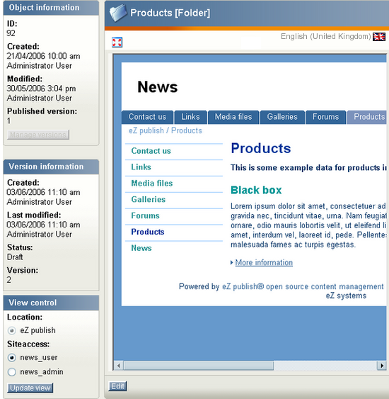

Previewing content
The object edit interface makes it possible to preview content before it is published. This means that you can for example generate a real preview of an article while you're typing it up. There is no need to publish it first in order to view it. The preview feature can be reached from both the edit and the version management interface. In the edit interface it can be accessed by clicking the "View" button, in the version management interface you can click on the different version numbers and translations. The following image shows how the preview interface looks like.

The preview interface.
Please note that it is possible to generate a preview without the administration interface around it. This can be done by clicking on the icon with red arrows in its corners, it is located at the top of the preview window.
Previewing the object which is being edited
Make sure that you're editing an object.
Click the "View" button in the "Current draft" window. The system will bring up the preview interface.
Select the siteaccess which uses the design that should be used to generate the preview. You'll probably have to select the one which has the same name as your actual site.
Click the "Update view" button to regenerate the preview.
When done, click the "Edit" button to get back to edit mode.
Previewing a version
Make sure that you're using the version interface (click the "Manage versions" button in edit mode).
Click on one of the version numbers or one of the translations. The system will bring up the preview interface.
Select the siteaccess which uses the design that should be used to generate the preview. You'll probably have to select the one which has the same name as your actual site.
Click the "Update view" button to regenerate the preview.
When done, click the "Manage versions" button to get back to the version management interface.
Powered by eZ Publish™ CMS Open Source Web Content Management. Copyright © 1999-2013 eZ Systems AS (except where otherwise noted). All rights reserved.